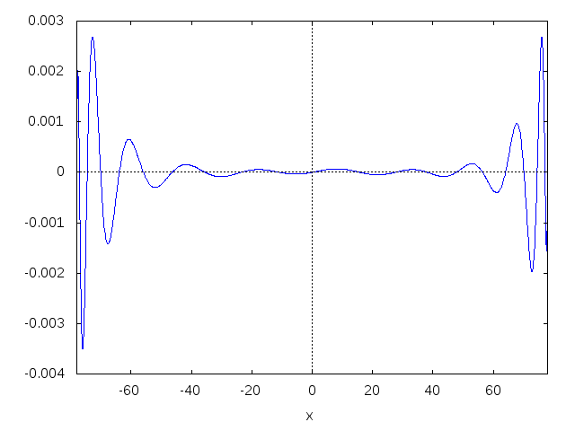
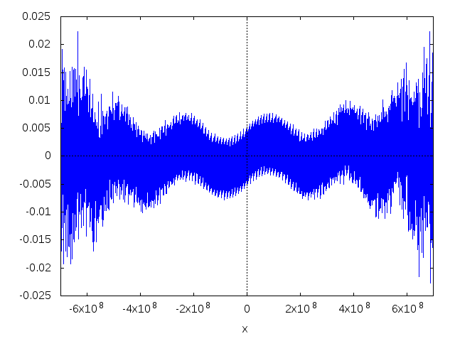

DRAFT Performance improvements for inverse Gudermannian function
In order to speed up computation of a Mercator projection of a point \((\lambda, \varphi)\) that involves the inverse Gudermannian function \[ x = R \lambda, \quad y = R \ln \left[ \tan \left( \frac{\pi}{4} + \frac{\varphi}{2} \right) \right] \] different tricks can be used. Here the numeric value of the earth radius is \(R= 6378137\) (EPSG:3857).
1 Use the sine function instead of tangent
One trick is to use double-angle formula for the cosine function \[ \cos 2\theta = \frac{1-\tan^2\theta}{1+\tan^2\theta}, \quad\text{or}\quad \tan^2\theta = \frac{1 - \cos 2\theta}{1 + \cos 2\theta}. \] Placed in \(y\) gives \[ y = R \ln \left[ \frac{1 - \cos (\frac{\pi}{2} + \varphi)}{1 + \cos (\frac{\pi}{2} + \varphi)} \right]^{\frac{1}{2}} = \frac{1}{2} R \ln \left[ \frac{1 + \sin \varphi}{1 - \sin \varphi} \right] \] Performance gained because \(\sin \theta\) computation is approximately 20% faster than \(\tan \theta\).
2 Use a polynomial approximation
The second trick is to use a polynomial approximation. The best approximation by a rational function is the Padé approximation where the Padé approximant of order \([m/n]\), \(m\ge 0\), \(n\ge 1\) is the rational function \[ \hat{y} = \frac{\sum_{j=0}^m a_j \varphi^j}{1 + \sum_{k=1}^n b_k \varphi^k}. \]
To find coefficients \(a_j\) and \(b_k\) the Remez algorithm that finds the minimax approximation. One implementation of the algorithm is included in the Boost.Math library.
To use the algorithm a local copy of Boost library is required
sudo apt install libmpfr-dev libgmp-dev libntl-dev
git clone http://github.com/boostorg/boost
cd boost
git submodule update --recursive --init
./bootstrap.sh
At the moment the following PRs are needed to compile minimax:
The original function must be defined in libs/math/minimax/f.cpp as
case 42: { return log(tan(boost::math::constants::pi<double>() * (1. / 4. + x / 180. / 2.))); }
Compiling and running the approximation algorithm
./b2 release libs/math/minimax ./libs/math/minimax/bin/minimax <<EOF variant 42 pin true order 10 10 absolute target-precision 53 working-precision 256 range -78 78 step 1 info EOF
produce the output that contains the approximation error Maximum Deviation Found: 5.486e-10 and to arrays P and Q
with coefficients \(a_i\) and \(b_i\).
The approximation error
A:[ 0.00000000000000000e+00, 1.74532925181541924e-02, -9.48886714733577619e-06, -5.14483236972284849e-06, 2.53801360698030180e-09, 5.16175373655094521e-10, -2.20225881581151031e-13, -1.96854479399833152e-14, 6.49052820186726701e-18, 2.04658527439432671e-19, -3.11125833784600832e-23]; B:[ 1.00000000000000000e+00, -5.43672036010859947e-04, -3.45546751987863368e-04, 1.73019445085169732e-07, 4.32516091068641779e-08, -1.93000947857361296e-11, -2.32987434393775411e-12, 8.68760908701761693e-16, 4.81414832735723520e-17, -1.25851403124467958e-20, -1.97411360668142313e-22]; horner(p,x):=rreduce(lambda([a,y], a + (x*y)), p); r(x):= 6378137 * horner(A, x) / horner(B, x); f(x):= 6378137 * log(tan(%pi / 4. + %pi * x / 180. / 2.)); plot2d([f(x) - r(x)], [x, -78, 78])$

#include <iostream> #include <boost/math/constants/constants.hpp> template<typename T> constexpr double horner(double, const T an) { return an; } template<typename T, typename... U> constexpr double horner(double x, const T an, const U ...a) { return horner(x, a...) * x + an; } double approx(double lat) { return 6378137. * horner(lat, 0.00000000000000000e+00, 1.74532925181541924e-02, -9.48886714733577619e-06, -5.14483236972284849e-06, 2.53801360698030180e-09, 5.16175373655094521e-10, -2.20225881581151031e-13, -1.96854479399833152e-14, 6.49052820186726701e-18, 2.04658527439432671e-19, -3.11125833784600832e-23) / horner(lat, 1.00000000000000000e+00, -5.43672036010859947e-04, -3.45546751987863368e-04, 1.73019445085169732e-07, 4.32516091068641779e-08, -1.93000947857361296e-11, -2.32987434393775411e-12, 8.68760908701761693e-16, 4.81414832735723520e-17, -1.25851403124467958e-20, -1.97411360668142313e-22); } int main() { double lat = 45.; std::cout << "f(" << lat << ") = " << 6378137. * log(tan(boost::math::constants::pi<double>() * ( 1. / 4. + lat / 180. / 2.))) << ", approx = " << approx(lat) << ", err = " << std::abs(6378137. * log(tan(boost::math::constants::pi<double>() * ( 1. / 4. + lat / 180. / 2.))) - approx(lat)) << "\n"; }
3 Unrolled implementation for floating-point approximation
The above implementation of the Horner method produces \(n+m\) function calls that in debug mode without code optimization that makes computation slower. To avoid function call overhead Boost.Math has performance tuning of unrolled Horner schemes.
fpprec:20;
A:bfloat([ 0.00000000000000000e+00, 1.74532925181541924e-02, -9.48886714733577619e-06, -5.14483236972284849e-06, 2.53801360698030180e-09, 5.16175373655094521e-10,
-2.20225881581151031e-13, -1.96854479399833152e-14, 6.49052820186726701e-18, 2.04658527439432671e-19, -3.11125833784600832e-23]);
B:bfloat([ 1.00000000000000000e+00, -5.43672036010859947e-04, -3.45546751987863368e-04, 1.73019445085169732e-07, 4.32516091068641779e-08, -1.93000947857361296e-11,
-2.32987434393775411e-12, 8.68760908701761693e-16, 4.81414832735723520e-17, -1.25851403124467958e-20, -1.97411360668142313e-22]);
a:ssubst("e", "b", printf(false, "~a", A[length(A)]));
for i:length(A)-1 step -1 while i>=1 do ( a:ssubst("e", "b", printf(false, "(~a * lat + ~a)", a, A[i])));
b:ssubst("e", "b", printf(false, "~a", B[length(B)]));
for i:length(B)-1 step -1 while i>=1 do ( b:ssubst("e", "b", printf(false, "(~a * lat + ~a)", b, B[i])));
printf(true, "#+begin_src cpp~% return earth_radius_for_epsg3857 *~% ~a~% /~% ~a;~%#+end_src", a, b);
return earth_radius_for_epsg3857 * ((((((((((-3.1112583378460085319e-23 * lat + 2.0465852743943268009e-19) * lat + 6.4905282018672673884e-18) * lat + -1.9685447939983315591e-14) * lat + -2.2022588158115104182e-13) * lat + 5.1617537365509453239e-10) * lat + 2.5380136069803016519e-9) * lat + -5.1448323697228488745e-6) * lat + -9.4888671473357768301e-6) * lat + 1.7453292518154191887e-2) * lat + 0.0e0) / ((((((((((-1.9741136066814230637e-22 * lat + -1.258514031244679556e-20) * lat + 4.8141483273572351796e-17) * lat + 8.6876090870176172185e-16) * lat + -2.3298743439377541768e-12) * lat + -1.9300094785736130185e-11) * lat + 4.3251609106864178231e-8) * lat + 1.7301944508516974048e-7) * lat + -3.4554675198786337842e-4) * lat + -5.4367203601085991108e-4) * lat + 1.0e0);
4 Use a polynomial approximation with fixed-point coefficients
Also numerator and denominator polynomial values can be computed with fixed-point arithmetic1 as
\[ p(x) = B_p \sum_{i=0}^n \frac{2^{K_i} p_i}{2^{K_i}} (B_x x)^i \]
where \(B_x=10^7\) is the argument precision, \(B_p=10^7\) is the result precision, and \(K_i=\lceil \log_2 \frac{p_{i-1}}{p_i}\rceil\) is a binary precision value for coefficient \(p_i\).
The fixed-point polynom is \[ p(x) = B_p \sum_{i=0}^n \frac{\hat{p}_i}{2^{K_i}} (B_x x)^i \] where \(\hat{p}_i=2^{K_i} p_i\) is an $i$-th fixed-point coefficient and \(2^{K_i}\) is a coefficient normalization factor.
The original function must include both \(B_x\) and \(B_y\) factors
case 42: { return 1e7 * log(tan(boost::math::constants::pi<double>() / 4. + boost::math::constants::pi<double>() * x / 1e7 / 180. / 2.)); }
Running the Remez algorithm
./libs/math/minimax/bin/minimax <<EOF variant 42 pin true order 8 8 absolute target-precision 53 working-precision 256 range -700000000 700000000 step 10 info EOF
gives Maximum Deviation Found: 3.428e-03 and floating-point coefficients P and Q that must be multiplied by \(2^{K_i}\) factors.
Generated code for the Horner scheme with fixed-point arithmetic
A:[ 0.00000000000000000e+00, 1.74532924556019616e-02, -2.77262185306762557e-16, -3.72694256743231832e-20, 4.81363685795693323e-34, 2.29535346381510108e-38, -2.07465477489024894e-52, -3.53742385853494719e-57, 1.16169586848488374e-71]; B:[ 1.00000000000000000e+00, -1.58859532422400327e-14, -2.64307673635186612e-18, 3.56453477148968955e-32, 2.27039162133027492e-36, -2.38419632718063700e-50, -6.75596211654911634e-55, 4.42329738944445972e-69, 4.09454133512147724e-74]; q:32; Bx:1e7; A[1]: 0; K:q; for i:2 while i<=length(A) do ( Ki:q+ceiling(-log(abs(A[i]))/log(2)), A[i]:round(A[i]*(2^Ki)), A[i-1]:[A[i-1], Ki-K], K:Ki); B[1]:2^q; K:q; for i:2 while i<=length(B) do ( Ki:q+ceiling(-log(abs(B[i]))/log(2)), B[i]:round(B[i]*(2^Ki)), B[i-1]:[B[i-1], Ki-K], K:Ki); printf(true, "#+begin_src cpp~% __int128_t p = ~a;~%", A[length(A)]); for i:length(A)-1 step -1 while i>=1 do ( printf(true, " p = ~a + ((x * p) >> ~a);~%", A[i][1], A[i][2])); printf(true, " __int128_t q = ~a;~%", B[length(B)]); for i:length(B)-1 step -1 while i>=1 do ( printf(true, " q = ~a + ((x * q) >> ~a);~%", B[i][1], B[i][2])); printf(true, " return earth_radius_for_epsg3857 * double(p) / double(q) / ~a;~%#+end_src", Bx);
__int128_t p = 5509742251; p = -5960547410 + ((x * p) >> 48); p = -5334146698 + ((x * p) >> 16); p = 8386657114 + ((x * p) >> 46); p = 5367384452 + ((x * p) >> 15); p = -5905576228 + ((x * p) >> 46); p = -5363030634 + ((x * p) >> 13); p = 4797524499 + ((x * p) >> 46); p = 0 + ((x * p) >> 6); __int128_t q = 4971461300; q = 8194925537 + ((x * q) >> 16); q = -4446786581 + ((x * q) >> 48); q = -4789069729 + ((x * q) >> 15); q = 6480822406 + ((x * q) >> 46); q = 6210295445 + ((x * q) >> 14); q = -6543941038 + ((x * q) >> 46); q = -4801234761 + ((x * q) >> 13); q = 4294967296 + ((x * q) >> 46); return earth_radius_for_epsg3857 * double(p) / double(q) / 10000000.0;
The approximation error shows pretty bad behavior with respect to floating-point approximation:

5 Performance comparison
5.1 Compiled with -O0
| tan | 1110ms | 100% |
| sin | 958ms | 86% |
| polynom | 1538ms | 138% |
| unrolled | 477ms | 42% |
| fixed | 964ms | 86% |
5.2 Compiled with -O3
| tan | 983ms | 100% |
| sin | 879ms | 89% |
| polynom | 356ms | 36% |
| unrolled | 381ms | 38% |
| fixed | 678ms | 68% |
5.3 Compiled with -O3 -march=native and using FMA instrucions
| tan | 794ms | 100% |
| sin | 618ms | 77% |
| polynom | 122ms | 15% |
| unrolled | 122ms | 15% |
| fixed | 474ms | 59% |
The optimized floating-point approximation contains 24 FMA instructions
vmovsd 0x5f0(%rip),%xmm1 vfmadd213sd 0x5ef(%rip),%xmm0,%xmm1 vfmadd213sd 0x5ee(%rip),%xmm0,%xmm1 vmovsd 0x62e(%rip),%xmm3 vfmadd213sd 0x62d(%rip),%xmm0,%xmm3 vfmadd213sd 0x5dc(%rip),%xmm0,%xmm1 vfmadd213sd 0x623(%rip),%xmm0,%xmm3 vfmadd213sd 0x5d2(%rip),%xmm0,%xmm1 vfmadd213sd 0x619(%rip),%xmm0,%xmm3 vfmadd213sd 0x5c8(%rip),%xmm0,%xmm1 vfmadd213sd 0x60f(%rip),%xmm0,%xmm3 vfmadd213sd 0x5be(%rip),%xmm0,%xmm1 vfmadd213sd 0x605(%rip),%xmm0,%xmm3 vfmadd213sd 0x5b4(%rip),%xmm0,%xmm1 vfmadd213sd 0x5fb(%rip),%xmm0,%xmm3 vfmadd213sd 0x5aa(%rip),%xmm0,%xmm1 vfmadd213sd 0x5f1(%rip),%xmm0,%xmm3 vfmadd213sd 0x5a0(%rip),%xmm0,%xmm1 vfmadd213sd 0x5e7(%rip),%xmm0,%xmm3 vfmadd213sd 0x5e6(%rip),%xmm0,%xmm3 vfmadd132sd %xmm0,%xmm6,%xmm1 vmulsd 0x589(%rip),%xmm1,%xmm1 vfmadd132sd %xmm3,%xmm5,%xmm0 vdivsd %xmm0,%xmm1,%xmm0
Footnotes:
Florent De Dinechin. On fixed-point hardware polynomials. 2015. <hal-01214739>